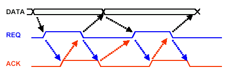
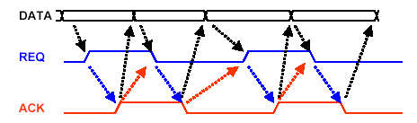
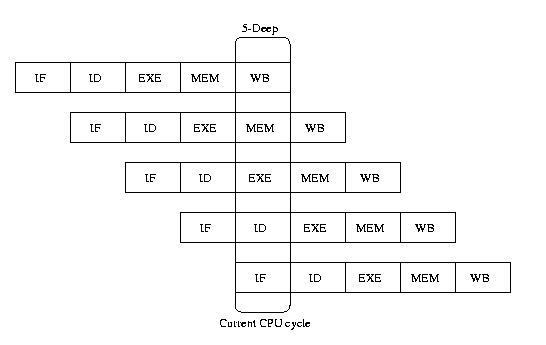
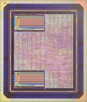
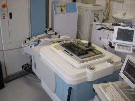
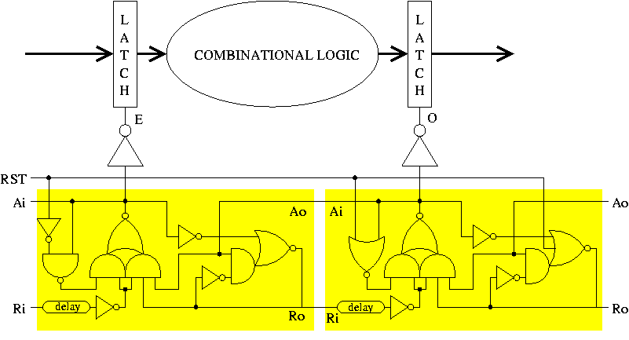
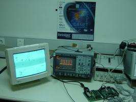

ASPIDA DLX Processor FAQ
The ASPIDA DLX Processor implements an asynchronous IP of the DLX
Instruction Set Architecture (ISA) with incorporated support for ISA
conversion so it can be easily converted to any RISC ISA. A design flow
that is based on existing EDA tools for all design steps is used in
order to produce a portable netlist and to distribute all the
intermediate HDL files used for high-level and gate-level design. The
final product is technology-independent and timing-independent and in a
form suitable for integration using only standard, industrial tools and
flows, with no dependence on asynchronous tools and specific knowledge
of asynchronous design for potential end users. Both an FPGA and an
ASIC versions have been finished and tested successfully.
Synchronous circuits typically consist of a set of combinational
logic clouds seperated by registers. The combinational logic clouds
perform predefined computations and pass the results to a neighbouring
combinational logic cloud through the registers. The registers store
the results of the computations preventing overwriting of the data. The
registers are controlled by a global clock, which dictates when the
registers are to accept a new value and store it.
An asynchronous circuit consists of a set of combinational logic
clouds seperated by latches. Unlike synchronous circuits, the latches
of the asynchronous circuits are not controlled by a global clock, but
by a set of controllers. These controllers control the flow of the data
in the circuit, by performing handshakes, using a communication
protocol with their neighbouring controllers.
A handshake is a communication protocol which was originally devised
for
shared buses. The most commonly used handshake mechanisms are the
two-phase
and four-phase ones.

In the four-phase handshake the request and acknowledge signals
return to zero to complete the handshake. Data change when the
handshake is
complete.

In the two-phase handshake the data change whenever both the request
and
the acknowledge change polarity.
A de-synchronized circuit is an asynchronous circuit which has
been produced by a synchronous one after removing the global clock and
replacing it with a set of controllers. The set of controllers performs
the flow control locally, as it is done in asynchronous circuits.
FPGA stands for "Field Programmable Gate Array". The array
can be programmed by a special software, in order to implement a
circuit. It can be programmed in a lab, as the only requirements are
the FPGA, the programming software and the circuit described in a
hardware description language. They are reusable and a low cost
solution for the implementation of digital circuits.
ASIC stands for "Application Specific Integrated Circuit". An
ASIC, unlike FPGAs, cannot be implemented in a lab, but only in a
fabrication facility. The fabrication procedure is complicated and
expensive. Once manufactured, an ASIC cannot be altered. ASIC
implementation is essential in high end implementations.
You only need the FPGA, the programming software and a computer.
You also need to have described the circuit in a hardware description
language. The two heavyweight FPGA manufacturers are
Xilinx and Altera.
Hardware description languages are high level languages which
describe the functionality of the circuit and how it is supposed to be
implemented. There is a wide range of HDLs, the most commong being
Verilog and VHDL.
You need to specify the circuit in a HDL, and then use special
software in order to implement it. You have to follow the ASIC design
flow
to the end and then send the design to a fabrication facility.
A design flow consists of all of the steps that need to be
followed for a design to be implemented. It typically consists of the
description of the circuit in an HDL, the synthesis, the placement and
the routing. After that, the design can be sent for fabrication.
DLX is a processor introduced by Hennesey and Patterson. It is
widely used for educational purposes and appears in a range of
textbooks. It has five pipeline stages and contains two basic building
blocks, an ALU and a register file.
A pipeline is a way of making concurrent computations, which
increases the speed of the overall execution, compared to a serial
computation. In a pipeline, all computational logic blocks, which have
something to do, make computations at the same time.

In the DLX pipeline, there are 5 stages: Instruction Fetch (IF),
Instruction Decode (ID), Execution (EXE), Memory Access (MEM) and
Register
Writeback (WB). After the initial filling stages, all 5 stages are
active
executing 5 successive instructions at a time.
In a synchronous pipeline, the register stages also exchange their
results at the same time, in predefined time slots. In an asynchronous
circuit, they make agreements with their neighbouring combinational
logic
clouds, when to exchange results.
Our ASIC implementation of DLX, can run as fast as 77MHz both in
the synchronous and the asynchronous implementation. Our FPGA
implementation runs at 13.7 MHz.
Yes, you can download our implementation of DLX from our web site or our
FTP site. Your are welcome
to
implement DLX on your FPGA, but for the ASIC version, you need to send
it to a fabrication facility, which is not free of charge.
DLX is not commercially availabe. It is protected from the
General Public License. It is freely available under this license.
There is a wide range of FPGAs, from very low end to very high
end. The price of these devices is defined according to their
capabilities. In our implementation, we used a very low cost FPGA,
which is available for no more than $100. You can find a complete
pricelist at www.digilentinc.com.
Both Xilinx and Altera offer free versions
of their programming software, which include all the essential
functionality for the implemetation of a design, even our DLX. If you
want a full version, you need to contact the vendors for a pricelist.
You can contact Christos
Sotiriou
for more information regarding this project. Take a look at our
Asynchronous group web
site!
Sure, there is a C compiler, which provides DLX assembly. You
just need to download this compiler from our web site
or our
FTP site
and use the appropriate link libraries.
Yes, the ASIC version has been manufactured and tested. The tests
have been
a success and we now have a lot of fully working ASIC ASPIDA chips.
Here's
a photo (click it for a larger one). The two left-side boxes are the
Instruction Cache and the Data Cache.

You can also see a photo during the chip testing. More photos are
available here.

You have to follow a synthesis, place and route flow. The flow we
used in our implementation is
this one.
If you want to implement the synchronous version, download the
source
files
here and follow the synthesis and place and route
procedure of the Xilinx ISE tool. If you want to implement the
de-synchronized version, download the source files
here
and follow the same synthesis and place
and route procedure as above.
If you just want to simulate the placed and
routed DLXs, download the Verilog and SDF files:
de-synchronized
or synchronous.
Finally, if you want to just download the DLXs to an FPGA, download
the
appropriate bitfile:
de-synchronized
or
synchronous.
5.6 How can I implement the de-synchronizing
controllers on the FPGA?
The de-synchronizing controllers that are used in the FPGA version of
DLS are semi-decoupled controllers.

They consist of a "master" part and a "slave" part and the verilog
description can be found
here.
The complete de-synchronizing controller of DLX includes the "master"
and "slave" parts along with a pulse delay
and a matched delay. The pulse delay is just an inverter chain. A
verilog description of the pulse delay can be found here.
The "KEEP" constraints are essential, otherwise the ISE software will
optimize out the inverters.
A verilog description of the matched delay can be found here. The
synthesis attributes are essential so that the chain
of AND-gates, which implement the assymetric matched delay, are not
optimized out by the tool.
The complete controller verilog description can be found here.
Sure, you can download movies which show the DLX executing "the
game of
life" here.
The
DLX runs a program which fills memory locations with a bit-mapped
matrix of
the game screen. In the demo board, a VGA controller is displaying the
memory matrix onto the monitor.
You can also see our lab setup.

More photos available
here.
Created by the ASYNC
group
of the ICS-FORTH